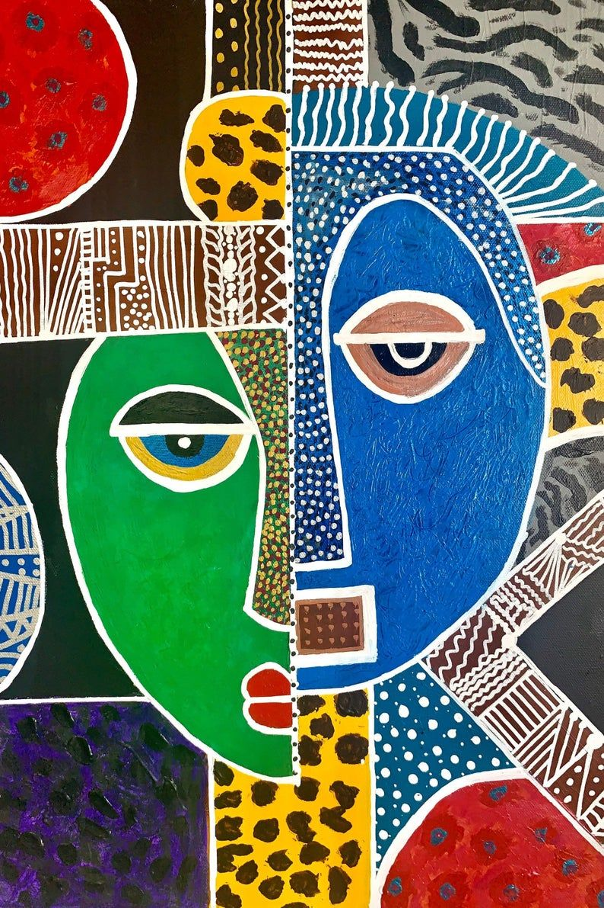

Emmanuel Nkuranga
Co-founder and leading contemporary artist known for vibrant, abstract compositions.
Rwanda's Premier Contemporary Art Gallery
Inema Arts Center is East Africa's first art center, founded in 2012 by brothers Emmanuel Nkuranga and Innocent Nkurunziza. Located in the Kacyiru neighborhood of Kigali, Inema (meaning "happiness" in Kinyarwanda) has become a vibrant hub for contemporary African art, creativity, and cultural exchange.
The center showcases works from Rwanda's most talented artists alongside international exhibitions. With its colorful murals, open-air studios, and welcoming atmosphere, Inema has transformed from a simple art space into a cultural landmark that attracts art lovers, collectors, and tourists from around the world.
Listen to ambient sounds from a typical day at Inema Arts Center

Co-founder and leading contemporary artist known for vibrant, abstract compositions.
Co-founder specializing in portraiture and mixed media installations.
Inema regularly hosts international artists for residencies and collaborations.
| Day | Opening Hours | Entry Fee |
|---|---|---|
| Monday - Friday | 9:00 AM - 6:00 PM | Free (Donations welcome) |
| Saturday | 10:00 AM - 7:00 PM | Free (Donations welcome) |
| Sunday | 11:00 AM - 5:00 PM | Free (Donations welcome) |
| Art Workshops | By appointment | $20 - $50 per session |
Note: While entry is free, workshops and purchasing artwork have associated costs. The center welcomes donations to support local artists.
Explore some of the vibrant artwork displayed at Inema:

Inema Arts Center offers various creative workshops for all skill levels:
All workshops include materials and are taught by professional artists. Booking in advance is recommended.
Inema hosts regular cultural events including:
Check their social media for the latest event schedule.
Address: KG 563 St, Kacyiru, Kigali, Rwanda
Getting There: Located in the Kacyiru neighborhood, about 10 minutes from downtown Kigali. Accessible by taxi, moto (motorcycle taxi), or the Tap&Go ride-sharing app.
+250 788 309 968
@inemaartcenter on Instagram & Facebook